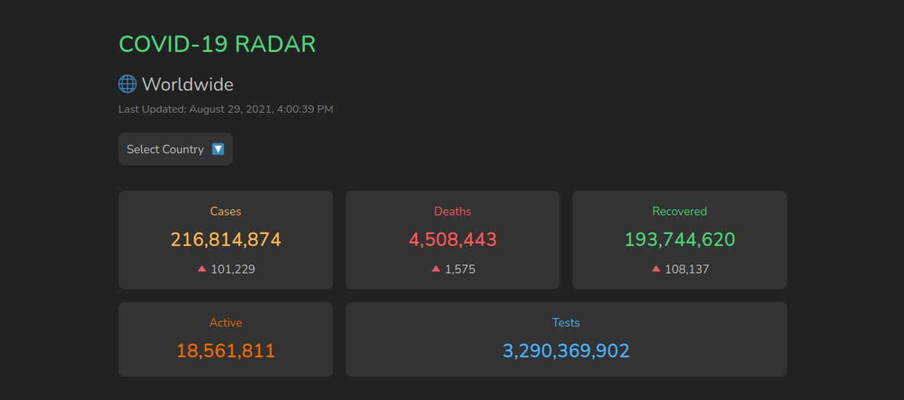
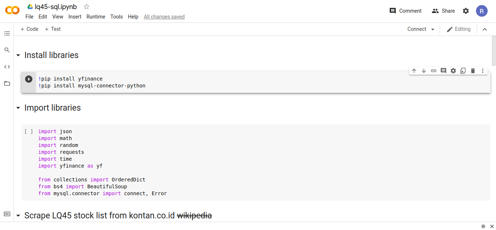
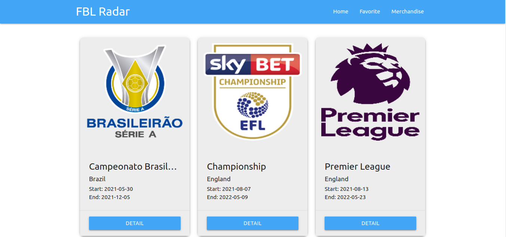
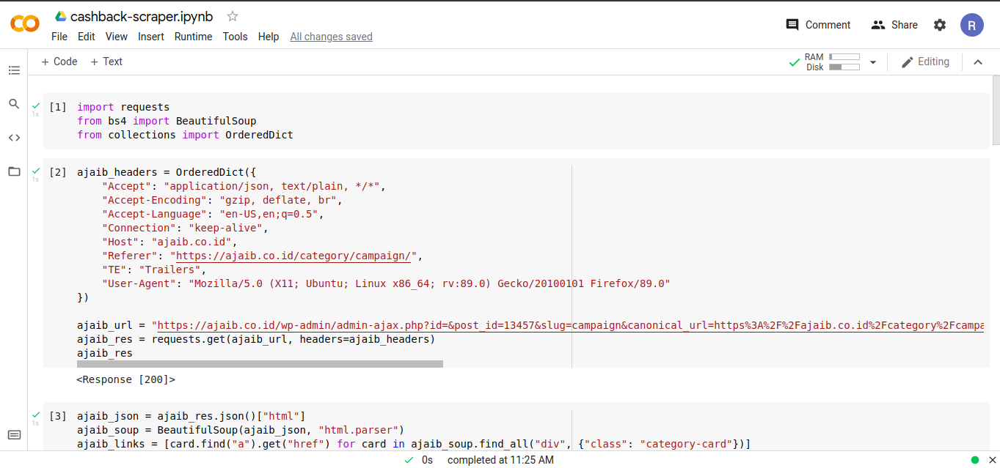

Hi, I am Rizky.
A data science enthusiast & web developer.
I love solving problems and learning new things everyday. In my spare time, I write on my blog, reading tech articles, solving algorithm problems, helping peoples solving programming problems in kotakode (Indonesia equivalent of stackoverflow) or hang out with my friends. My mission is to help make the world a better place by solving real world problems with programming.
Download CVSkills
class GeneralSkills {
constructor(frontEnd, data) {
this.frontEnd = frontEnd;
this.data = data;
}
get frontEnd() {
return this.frontEnd;
}
set frontEnd(frontEnd) {
this.frontEnd = frontEnd;
}
get data() {
return this.data;
}
set data(data) {
this.data = data;
}
}
const frontEnd = [
"HTML",
"CSS",
"Bootstrap",
"JavaScript ES6",
"Web Components",
];
const data = [
"Python",
"Google Colab",
"BeautifulSoup",
"MySQL"
];
const generalSkills = new GeneralSkills(frontEnd, data);
console.log(generalSkills.frontEnd);
console.log(generalSkills.data);
class Tools:
def __init__(self, tools):
self.tools = tools
def get_tools(self):
return self.tools
def set_tools(self, tools):
self.tools = tools
tools = Tools([
"Github",
"Webpack",
"NPM",
"Postman",
"Netlify",
"Linux",
"Vim",
"VS Code",
"Termux (Android Terminal Emulator)"
])
print(tools.get_tools())
Projects
COVID-19 RADAR
A COVID-19 dashboard application consisting of worldwide and Indonesia COVID-19 stats, timeline chart, live cases and prevention tips in an easy to use UI. It is built with the power of web components which make it easy to scale and maintenance as the UI is consisted of multiple components.
- HTML
- CSS
- JavaScript
- Web Components
- COVID-19 API
- Webpack
- Chart.js
- ky
Yahoo Finance LQ45 Scraper
A web scraper that scrape LQ45 stock list from kontan.co.id, then using it to fetch historical stocks data from yfinance API and finally save the data to remote MySQL server. The historical data can then be used for data analysis.
- Python
- BeautifulSoup
- yfinance
- MySQL
Football Radar
A Progressive Web Application that shows football informations. The UI is built using Materialize CSS. As a PWA, it is capable of working in offline mode by using previously stored cache. Another notable feature is ability to store data in IndexedDB storage, as seen with the favorite team feature. It is also able to send push message from the server via Firebase Cloud Messaging integration.
- HTML
- CSS
- Materialize CSS
- JavaScript ES6
- Web APIs
- IndexedDB
- Service Worker
- Workbox
- Firebase Cloud Messaging
- Snowpack
Promo Scraper
A web scraper that scrape promo informations like cashback for several websites such as Ajaib, Bibit and Line Bank. The purpose of this project is to help gain promo informations faster without having to manually find the promo. The output is delivered in a clean and human readable format.
- Python
- requests
- BeautifulSoup